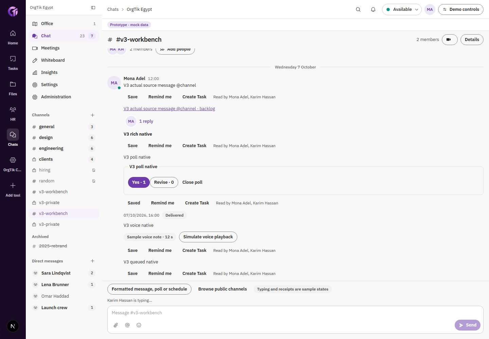

CRM للخدمات، Console للأدوات
الـ CRM بيدير الخدمات والتسليم والـ contacts. الـ Console بيدير الأدوات وعمليات المنصة. Website Manager الداخلي بيعرض مرايات وبيفتح المالك الحقيقي بصلاحيات الشخص الحالي.
مراجعة E1–E13دورات الأدوات التسعة، وروابط الإيكوسيستم، والـ DS v2 اتنقلت للشاشات العادية اللي بتقرأ وبتحفظ سجلات الـ mock. تسليم P5 بيجمع الدليل، والمصطلحات، ورحلات J1–J20، وحدود كل نتيجة.
كل نتيجة هنا ليها حدود واضحة. المراجعة المحلية، ونجاح الـ build والـ CI، وفحص النشر الأونلاين أدلة منفصلة. إرسال حقيقي ورفع ملفات بأي نوع وتشغيل providers لسه برّه نطاق البروتوتايب.
الأرقام تخص assertions وصور جوه دورة الأداة. مش عدد ميزات، ومش رحلات مستقلة تتجمع مع بعض.
| الأداة | التحقق المحلي | إيه اللي اتثبت | الدليل |
|---|---|---|---|
| تحميل فهرس الأدلة… | |||
لقطتان حقيقيتان من دورة Chats: لقطة البداية، وبعد إضافة الرسائل المنسّقة، والتصويت، والمواعيد، والمهمة المرتبطة. دي مقارنة واجهة وسلوك؛ سجلات المثال مختلفة، فمش مقارنة pixel لنفس الـ fixture.

العنوان والتفاصيل الأصلية محفوظين. لكل ملاحظة: اللي متحقق محليًا، الدليل، والجزء اللي لسه خارج النطاق. مراجعة 407 مش معناها إن 407 ميزة جديدة اتعملت، ولا إن كل مواصفات الإنتاج اتقبلت.
تحميل مراجعة المعايير…
| الرقم | الملاحظة الأصلية | النتيجة | الحدود اللي محفوظة |
|---|---|---|---|
| تحميل… | |||
سجل Sales issues.csv الأصلي فيه 191 ملاحظة. اتضافت نتيجة محددة ودليل وحدود، واتحفظت كل الحقول الأصلية. الأدلة المحلية الحالية مش شهادة بإغلاق كل متطلبات الأمان والبيزنس القديمة.
السجل التاريخي بعد التسويةالـ CRM بيدير الخدمات والتسليم والـ contacts. الـ Console بيدير الأدوات وعمليات المنصة. Website Manager الداخلي بيعرض مرايات وبيفتح المالك الحقيقي بصلاحيات الشخص الحالي.
مراجعة E1–E13رحلات حقيقية على الـ mock، مع فصل الأدلة المركبة عن run واحدة كاملة. J9 بيثبت UTM وpublic intake وCRM، من غير ادعاء WM picker. J20 بيثبت Live في Account والـ catalog والـ adapter، من غير إضافة Chat card للويبسايت المجمد.
الدليل الكامل للرحلاتخطوط وrail وتحكمات واحدة، وappearance للشخص الحقيقي. اتصلحت أخطاء المعنى المحددة، واتطبقت اختيارات D025 على التحكّمات العادية. اقتباس testimonial يفضل اقتباس؛ مش عرض سعر.
نتيجة مراجعة الاتساقطبقة بيانات الـ purchase catalog بس هي اللي بتقرأ النشر الحالي. المقارنة الصارمة بتستخدم نفس البيانات ونفس بروتوكول الصور، من غير masks أو تساهل في فرق الـ pixels.
دليل الـ parityالـ parity النهائي على الكود الموافق عليه لسه بوابة الدمج عند Root. الدليل السابق مربوط بنسخته، ومش ادعاء إن المقارنة الجديدة خلصت.